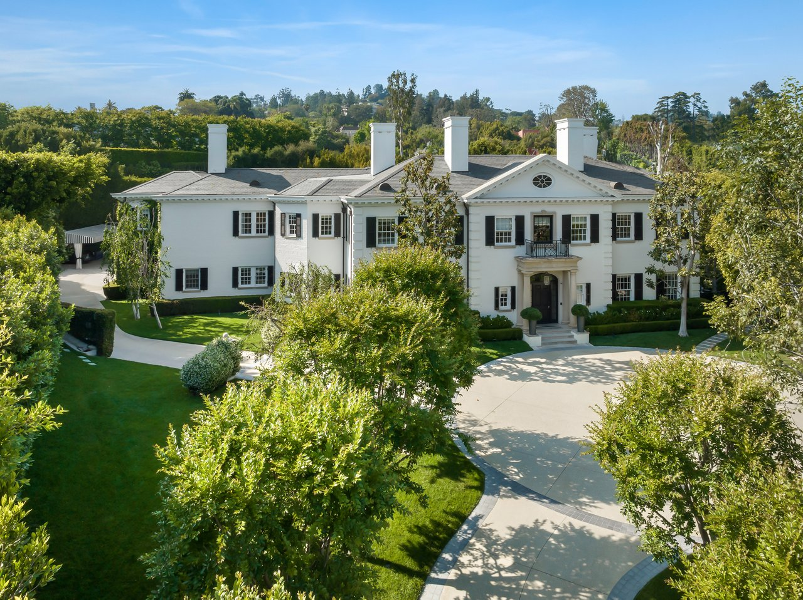

<section id="ns-communities" aria-labelledby="ns-communities-heading">
  <div class="ns-communities-inner">
    <div class="ns-communities-content">
      <h2 id="ns-communities-heading">Rooted in Huntsville</h2>
      <h3>Get to know our <span>neighborhoods.</span></h3>
      <p>From South Huntsville to Hampton Cove, every community has its own character. Explore the neighborhoods, discover local favorites, and find a place that feels like home.</p>
      <nav class="ns-neighborhoods" aria-label="Explore our neighborhoods">
        <a href="https://paulatisch.huntsvillehomes.homes/areas/huntsville/al"><span>Huntsville</span><span aria-hidden="true">›</span></a>
        <a href="https://paulatisch.huntsvillehomes.homes/areas.php?area=South+Huntsville"><span>South Huntsville</span><span aria-hidden="true">›</span></a>
        <a href="https://paulatisch.huntsvillehomes.homes/areas/hampton+cove/al"><span>Hampton Cove</span><span aria-hidden="true">›</span></a>
        <a href="https://paulatisch.huntsvillehomes.homes/areas.php?area=Northeast+Huntsville"><span>Northeast Huntsville</span><span aria-hidden="true">›</span></a>
      </nav>
      <a class="ns-communities-cta" href="https://paulatisch.huntsvillehomes.homes/areas/">Explore Our Communities</a>
    </div>
    <figure class="ns-communities-photo"></figure>
  </div>
</section>
